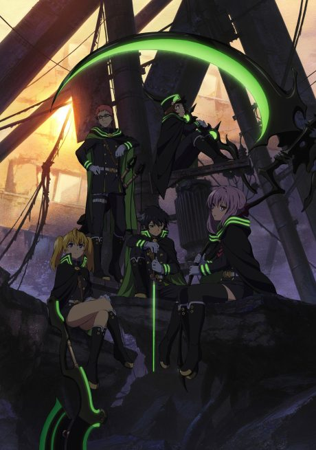
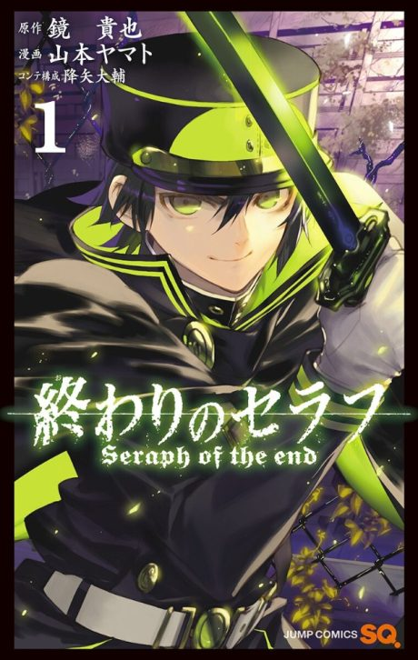

Anime
MangaSeraph of the End: Vampire Reign
終わりのセラフ
After the anime, read the manga from Chapter 42.
7.3AniList
—Animeter
24 ep2 seasons
Is it worth pushing through?
Built from what visitors report across all 2 seasons (24 episodes).
Loading reports…Checking what other people said about this one.
Sign in above with your email to add your report.